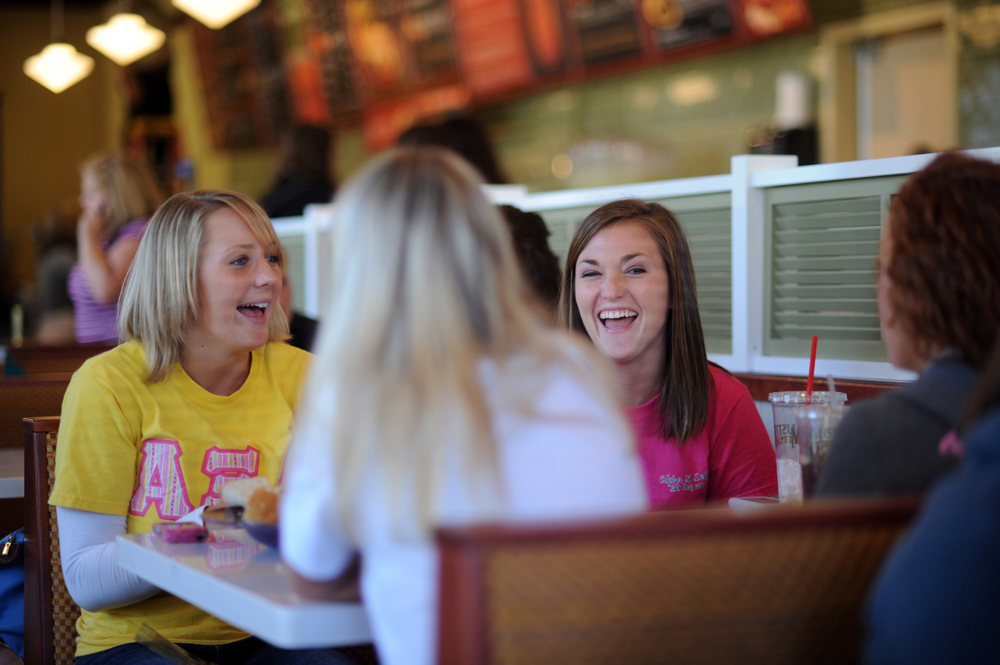
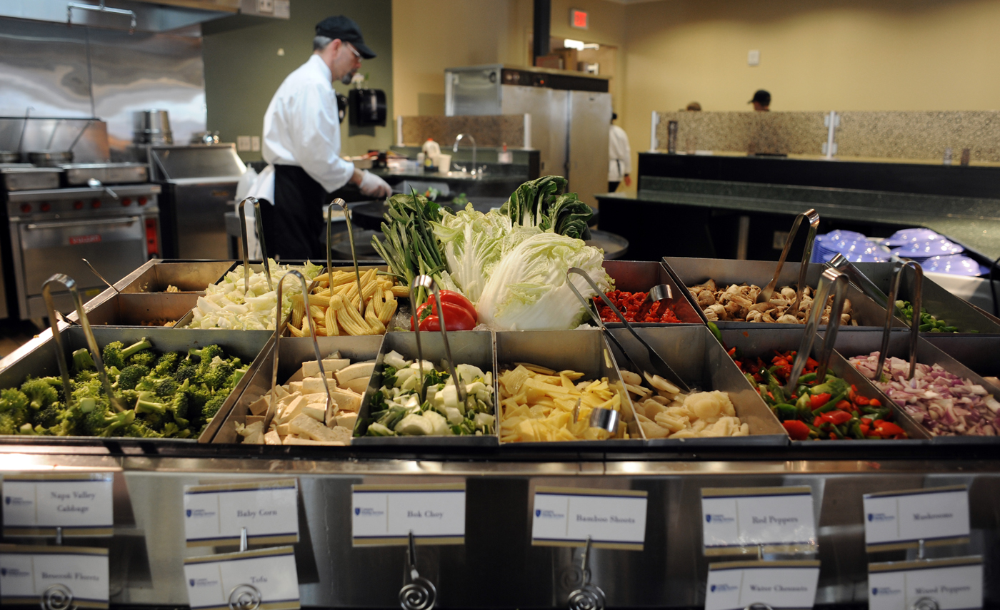

Declining Balance PointsDeclining Balance Points work on the same principle as bank debit cards. Each time your student makes a food purchase, the total cost of the meal is subtracted from the declining balance points in their account. Declining balance points may be used at any campus dining location.Unused declining balance points will transfer at the end of fall semester to the spring semester. However, any declining balance points remaining at the end of spring semester are forfeited to the University. |

|
|

|
Block MealsBlock meals are prepaid meals that can be used in the all-you-care-to-eat (AYCE) Courtyard Dining Hall. Block meals are great because they offer a discounted rate for buying upfront rather than paying the door price.The amount of meals on a meal plan is by semester and does not carry any weekly restrictions. Students may use their block meals for friends and family with any plan other than the unlimited plans. Block meals expire at the end of each semester and will not carry over from fall to spring. |